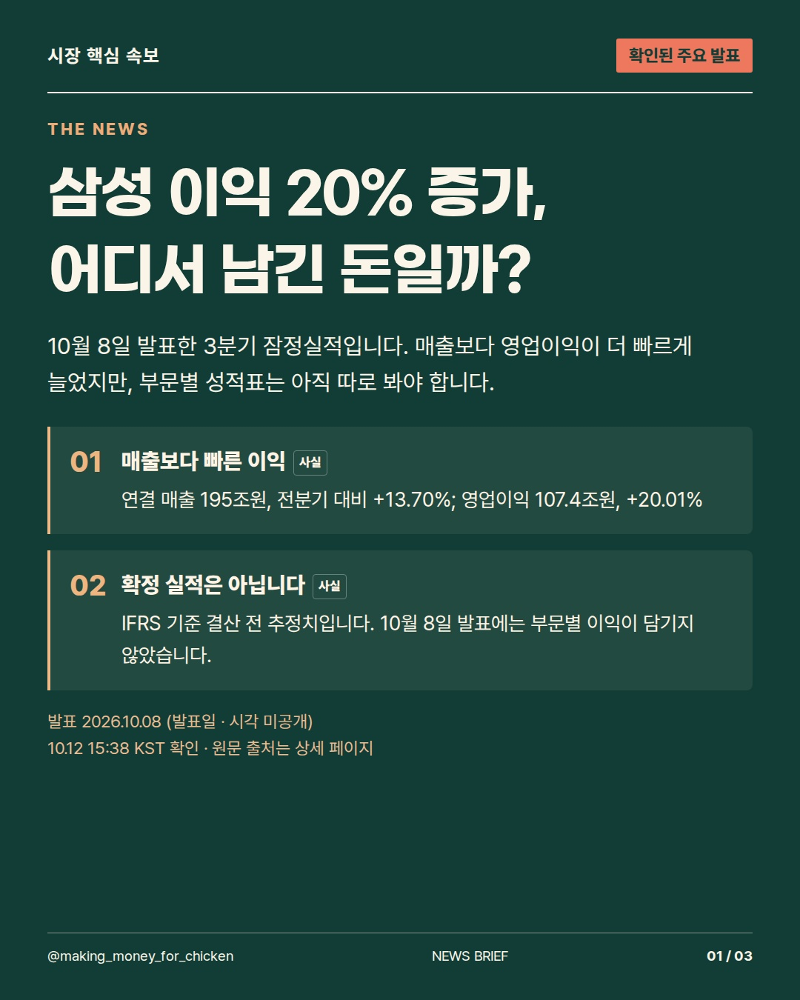
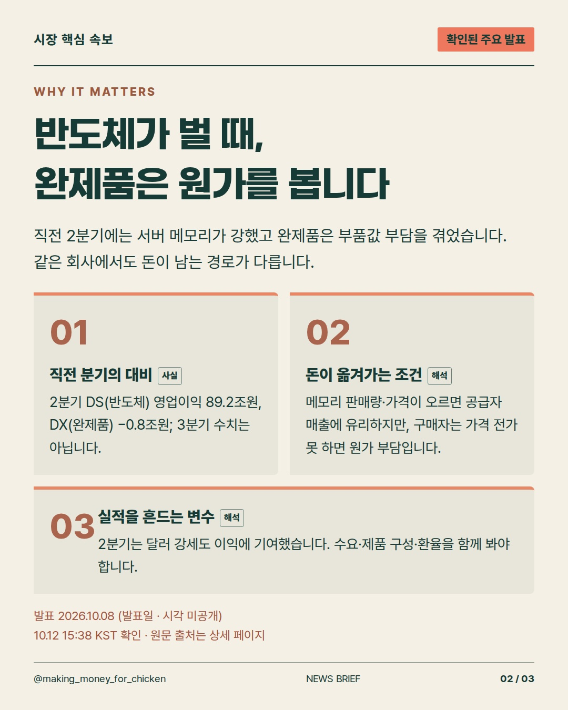
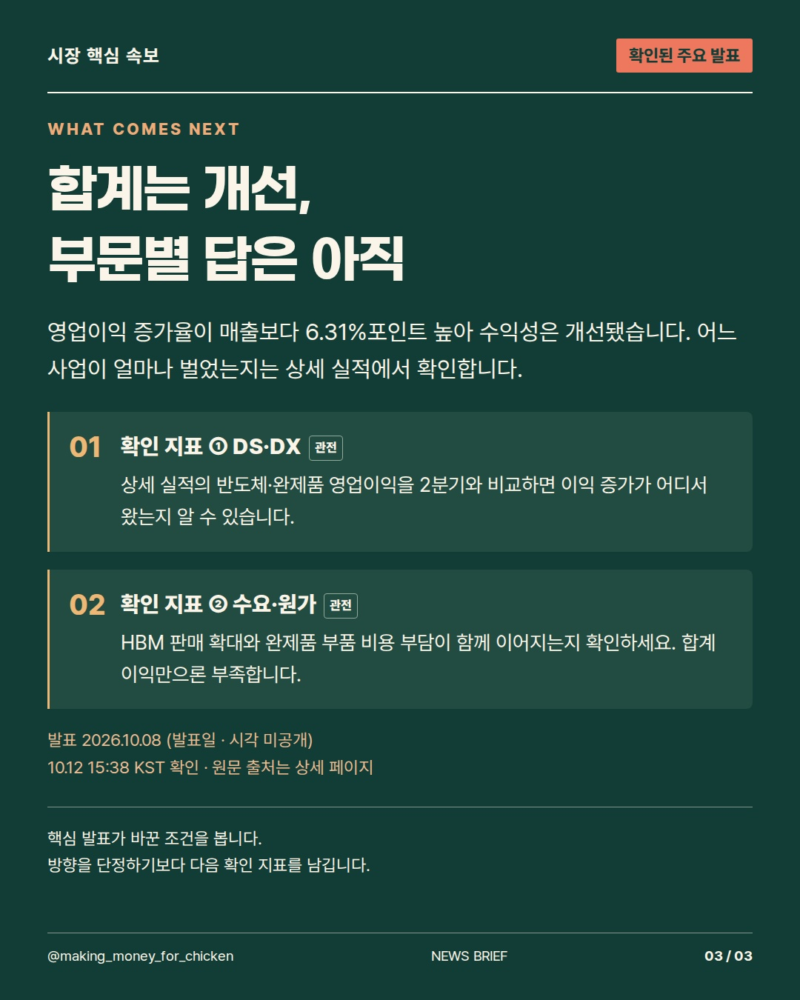

2026-10-12T06:38:27Z 확인 기준 · 발표 사실과 시장에 대한 해석을 구분합니다.
삼성의 이익이 매출보다 빠르게 늘었지만, 모든 사업이 함께 웃었다는 뜻은 아닙니다. 반도체가 벌어들인 돈과 완제품이 치른 부품값을 나눠 볼 차례입니다. #삼성전자 #반도체 #기업실적



사실·해석·관전 포인트를 구분한 정보 콘텐츠. 투자 참고용 · 매수·매도 권유 아님.